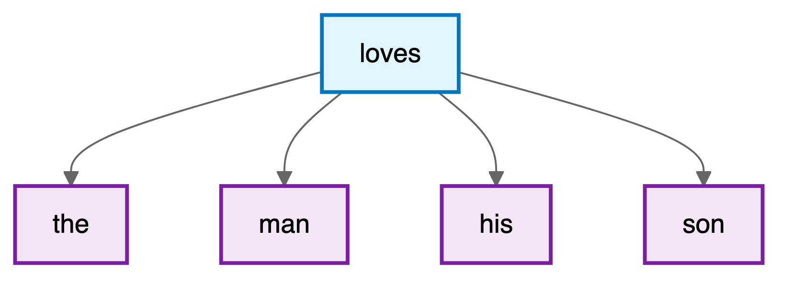
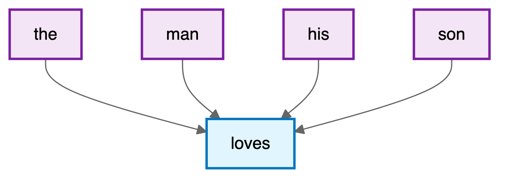
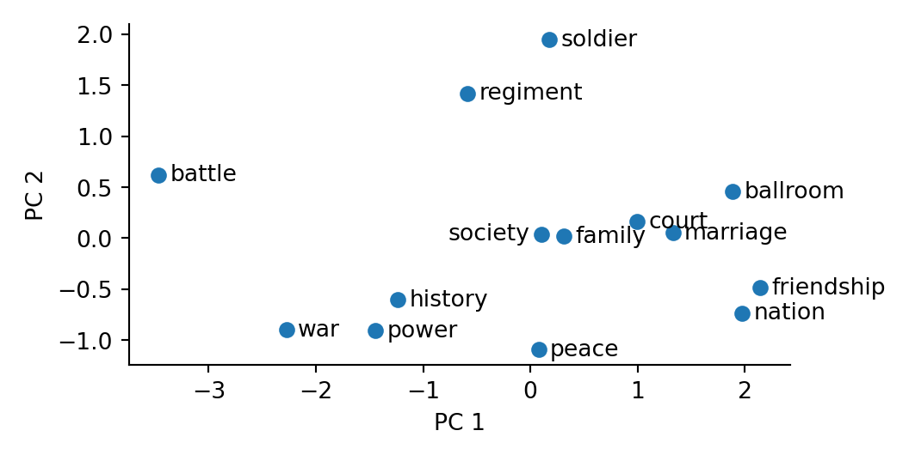
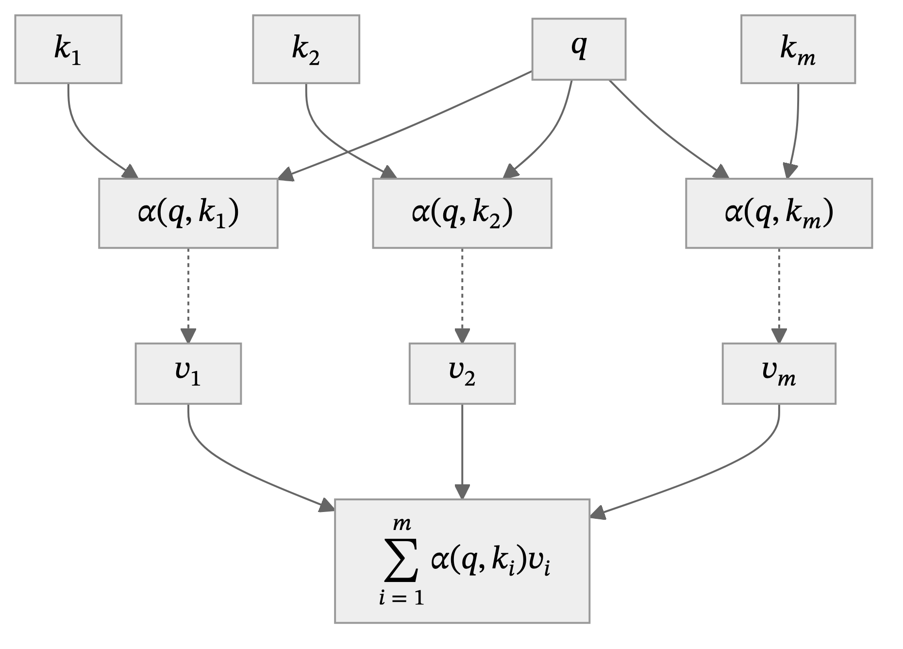
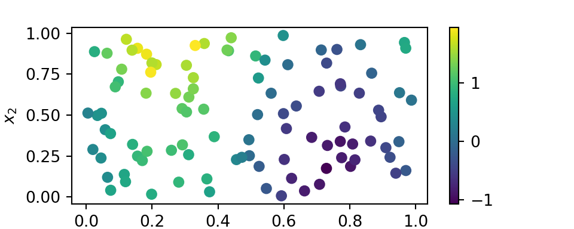
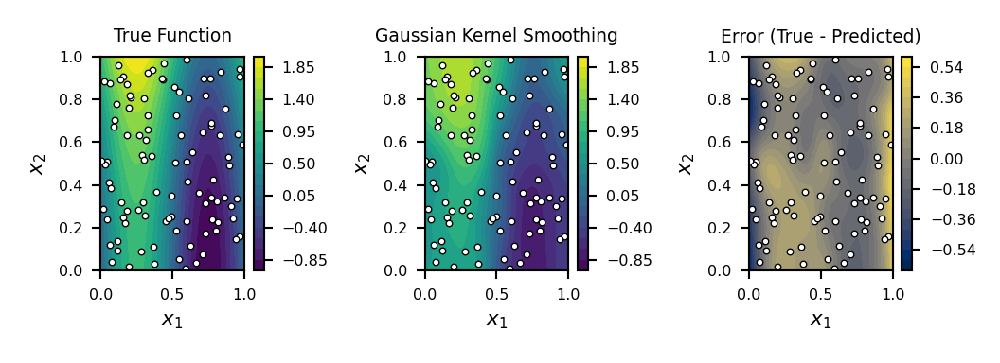
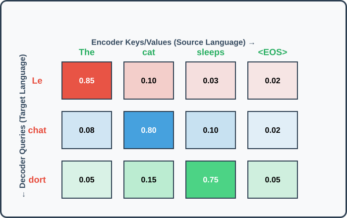
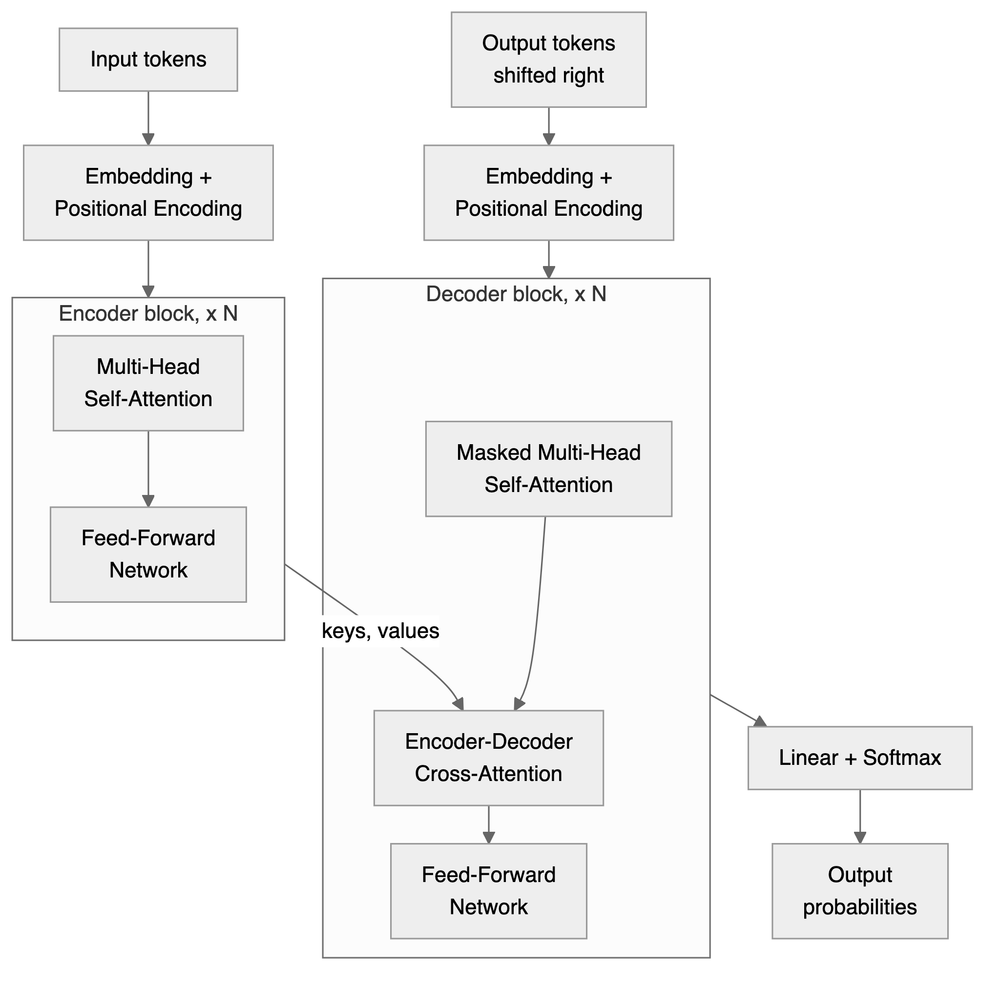
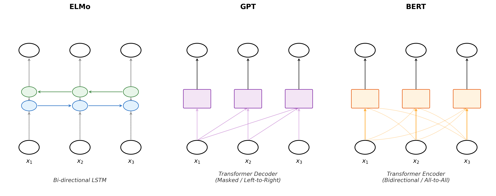
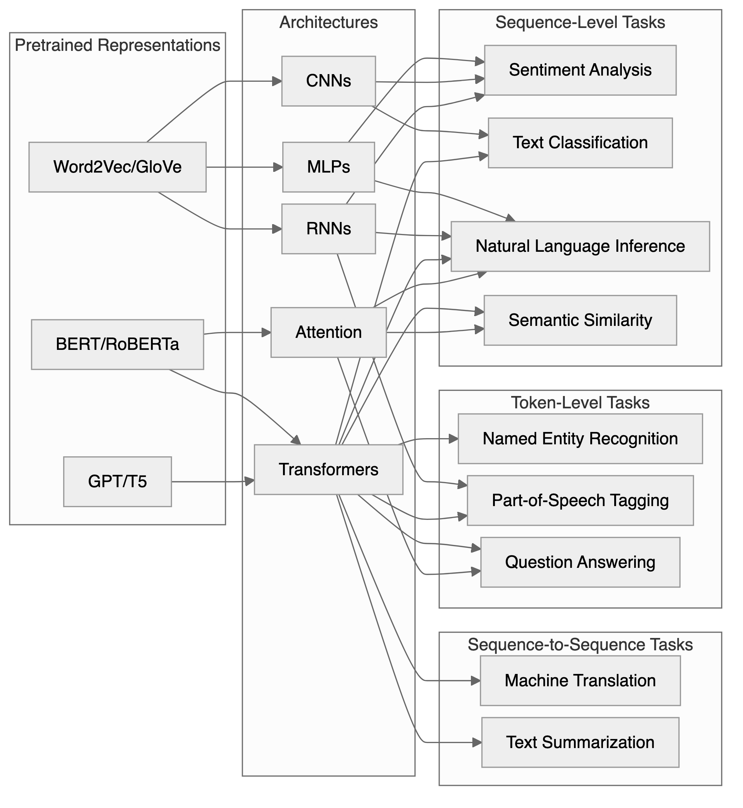

from gensim.models import Word2Vec
from sklearn.decomposition import PCA
model = Word2Vec(sentences, vector_size=100, window=5, min_count=1, seed=42, workers=1)
# PCA of the selected words (data/embedding_words.txt)
with open('data/embedding_words.txt', 'r') as file:
words = file.read().splitlines()
X = model.wv[words]
pca = PCA(n_components=2)
result = pca.fit_transform(X)23 Natural Language Processing
CNNs (Chapter 22) exploited the spatial structure of images; language presents a different kind of structure. Words are discrete symbols; their meaning depends on context, and sentences have variable length. These properties demand a new set of architectural ideas: embeddings, attention, and the Transformer, developed in this chapter.
The ability to understand and generate human language has long been considered a hallmark of intelligence. When Alan Turing proposed his famous test in 1950 (Turing 1950), he chose natural conversation as the ultimate benchmark for machine intelligence. Yet for decades, this goal remained frustratingly elusive. Early attempts at machine translation in the 1950s, which simply replaced words using bilingual dictionaries, produced nonsensical results that highlighted the complexity of human language. The phrase “The spirit is willing, but the flesh is weak” allegedly translated to Russian and back as “The vodka is good, but the meat is rotten”: a cautionary tale about the subtleties of meaning that transcend mere word substitution.
This chapter traces the path from those early failures to today’s language models that can engage in nuanced dialogue, translate between languages with near-human accuracy, and even generate creative text. At the heart of this transformation lies a fundamental shift in how we represent language computationally: from discrete symbols manipulated by hand-crafted rules to continuous vector spaces learned from vast corpora of text.
The chapter develops the mathematical foundations of natural language understanding: word embeddings, attention mechanisms, and the Transformer architecture that powers modern language models like BERT and GPT.
We will learn a representation from context, update it through attention, and choose a prediction objective for an NLP task. Word2Vec and BERT serve as historical case studies; Chapter 24 develops large generative language models.
23.1 Converting Words to Numbers (Embeddings)
Language poses distinctive challenges for mathematical modeling: unlike images, which naturally exist as arrays of continuous pixel values, or audio signals, which are continuous waveforms, text consists of discrete symbols with no inherent geometric structure. The word “cat” is not inherently closer to “dog” than to “quantum”, at least not in any obvious mathematical sense. Yet humans effortlessly recognize that cats and dogs share semantic properties that neither shares with abstract physics concepts.
A naive way to represent words is through one-hot encoding, where each word in a vocabulary is assigned a unique vector with a single non-zero entry. For example, in a vocabulary of size \(|\mathcal{V}|\), the word “cat” might be represented as \[ v_{\text{cat}} = \overbrace{[0, 0, \ldots, 1, \ldots, 0]}^{|\mathcal{V}|} \] with the 1 in the \(i\)-th position corresponding to “cat”. However, this approach fails to capture any notion of semantic similarity: the cosine similarity between any two distinct one-hot vectors is zero, erasing all information about how words relate to each other.
This type of representation makes even the seemingly simple task of determining whether two sentences have similar meanings challenging. The sentences “The cat sat on the mat” and “A feline rested on the rug” express nearly identical ideas despite sharing no words except “the” and “on.” Conversely, “The bank is closed” could refer to a financial institution or a river’s edge, with the same words encoding entirely different meanings. These examples illustrate why early symbolic approaches to natural language processing, based on logical rules and hand-crafted features, struggled to capture the fluid, contextual nature of meaning.
Instead of treating words as atomic symbols, we embed them in a continuous vector space where geometric relationships can reflect semantic relationships. Vector arithmetic sometimes captures analogies (Mikolov, Yih, and Zweig 2013), as in “king - man + woman \(\approx\) queen,” though such relationships must be checked rather than assumed.
To formalize this intuition, we seek a mapping \(\phi: \mathcal{V} \rightarrow \mathbb{R}^d\) from a vocabulary \(\mathcal{V}\) of discrete tokens to \(d\)-dimensional vectors. The challenge lies in learning this mapping such that the resulting geometry reflects semantic relationships.
The Math of Twenty Questions
My (Vadim’s) daughter and I play a game of Twenty Questions during road trips. The rules are simple: one person thinks of something, and the other person has to guess what it is by asking yes-or-no questions. The person who is guessing can ask up to twenty questions, and then they have to make a guess. If they guess correctly, they win; if not, the other person wins. The game illustrates how a shared set of questions can turn descriptions into numbers. For a few animals, part of the representation might be:
| Animal | Domestic | Larger than human | Long tail | Can move on two feet | |
|---|---|---|---|---|---|
| Bear | 1 | 0 | 1 | 0 | 1 |
| Dog | 1 | 1 | 0 | 1 | 0 |
| Cat | 1 | 1 | 0 | 1 | 0 |
Each row is a binary word vector, and each column is a question. These rough descriptions do not distinguish every animal: dog and cat need additional features. Binary answers also hide variation, such as size differences among dog breeds. Allowing real-valued features gives a more flexible representation.
The process of converting words into numbers is called “embedding.” The resulting vectors are called “word embeddings.” Here the literal analogy ends. Learned coordinates usually have no assigned question, need not lie between zero and one, and can be rotated together without changing their inner products. Training learns vectors useful for predicting observed text.
For example, in “the cat sat on the mat,” the observed center-context pair (“cat”, “sat”) supplies a prediction target: given “cat,” increase the probability assigned to “sat.” Nothing labels the meanings: the surrounding text is the supervision. Word2Vec, introduced by Mikolov, Chen, et al. (2013) in 2013, made this approach efficient enough to learn embeddings from large corpora. Earlier neural language models (Bengio et al. 2003) had also used distributed word representations.
23.2 Word2Vec and Distributional Semantics
The theoretical foundation for learning meaningful word representations comes from the distributional hypothesis, articulated by linguist J.R. Firth in 1957: “You shall know a word by the company it keeps” (Firth 1957; see also Harris 1954). This principle suggests that words appearing in similar contexts tend to have similar meanings. If “coffee” and “tea” both frequently appear near words like “drink,” “hot,” “cup,” and “morning,” we can infer their semantic similarity.
The Word2Vec framework turns this hypothesis into a prediction problem. It has two variants: skip-gram predicts surrounding words from a center word, while continuous bag of words predicts the center from its surroundings. Their learned vectors can then be evaluated on similarity or analogy tasks; these evaluations differ from the training objective.
The Skip-Gram Model
The skip-gram model predicts surrounding context words within a fixed window given a center word. This directly implements the distributional hypothesis.
Consider the sentence “The man loves his son” with “loves” as the center word and a context window of size 2. The skip-gram model aims to maximize the probability of generating the context words “the,” “man,” “his,” and “son” given the center word “loves.” This relationship can be visualized as follows:

The mathematical foundation assumes conditional independence among context words given the center word, allowing the joint probability to factorize:
\[ \begin{aligned} &P(\text{the}, \text{man}, \text{his}, \text{son} \mid \text{loves}) = \\ &\quad P(\text{the} \mid \text{loves}) \cdot P(\text{man} \mid \text{loves}) \cdot P(\text{his} \mid \text{loves}) \cdot P(\text{son} \mid \text{loves}) \end{aligned} \]
This conditional independence is a modeling simplification, not a property of natural language. The conditional probability uses two sets of embeddings: \(\mathbf{v}_w\) for words as centers and \(\mathbf{u}_w\) for words as context. Softmax normalizes over the entire vocabulary:
\[P(w_o \mid w_c) = \frac{\exp(\mathbf{u}_o^\top \mathbf{v}_c)}{\sum_{i \in \mathcal{V}} \exp(\mathbf{u}_i^\top \mathbf{v}_c)}\]
The skip-gram objective seeks to maximize the likelihood of observing all context words across the entire corpus. For a text sequence of length \(T\) with words \(w^{(1)}, w^{(2)}, \ldots, w^{(T)}\), the objective becomes:
\[\mathcal{L}_{\text{skip-gram}} = \frac{1}{T} \sum_{t=1}^T \sum_{-m \leq j \leq m, j \neq 0} \log P(w^{(t+j)} \mid w^{(t)})\]
where \(m\) is the context window size and only valid corpus positions \(1 \leq t+j \leq T\) are included. Division by \(T\) averages the log-likelihood contributions per center word.
The gradient with respect to the center word embedding reveals the learning dynamics:
\[\frac{\partial \log P(w_o \mid w_c)}{\partial \mathbf{v}_c} = \mathbf{u}_o - \sum_{i \in \mathcal{V}} P(w_i \mid w_c) \mathbf{u}_i\]
Each output score is linear in the center embedding, with coefficients that are themselves learned embeddings. This connects the construction to the ridge-function representations in Chapter 19. The gradient moves the center vector toward the observed context vector \(\mathbf{u}_o\), relative to the model-weighted average of context vectors. The dot product is a compatibility score; differences between scores give log-odds, since \(\log[P(w_o \mid w_c)/P(w_i \mid w_c)] = (\mathbf{u}_o-\mathbf{u}_i)^\top\mathbf{v}_c\).
The two vectors per word allow the model to capture different aspects of word usage. After training, the center word vectors \(\mathbf{v}_w\) are typically used as the final word embeddings, though some implementations average or concatenate both representations.
The Continuous Bag of Words (CBOW) Model
While skip-gram predicts context words from a center word, the Continuous Bag of Words (CBOW) model reverses this relationship: it predicts a center word based on its surrounding context. For the same text sequence “the”, “man”, “loves”, “his”, “son” with “loves” as the center word, CBOW models the conditional probability:
\[P(\text{loves} \mid \text{the}, \text{man}, \text{his}, \text{son})\]
The CBOW architecture can be visualized as multiple context words converging to predict a single center word:

The key difference from skip-gram lies in how CBOW handles multiple context words. Rather than treating each context word independently, CBOW averages their embeddings. For a center word \(w_c\) with context words \(w_{o_1}, \ldots, w_{o_{2m}}\), the conditional probability is:
\[P(w_c \mid w_{o_1}, \ldots, w_{o_{2m}}) = \frac{\exp\left(\mathbf{u}_c^\top \bar{\mathbf{v}}_o\right)}{\sum_{i \in \mathcal{V}} \exp\left(\mathbf{u}_i^\top \bar{\mathbf{v}}_o\right)}\]
For a full window away from corpus boundaries, \(\bar{\mathbf{v}}_o = \frac{1}{2m}\sum_{j=1}^{2m} \mathbf{v}_{o_j}\) is the average of context word vectors. Note that in CBOW, \(\mathbf{u}_i\) represents word \(i\) as a center word, and \(\mathbf{v}_i\) represents it as a context word, the opposite of skip-gram’s convention.
The CBOW objective maximizes the likelihood of generating all center words given their contexts, omitting positions outside the corpus:
\[\mathcal{L}_{\text{CBOW}} = \frac{1}{T}\sum_{t=1}^T \log P(w^{(t)} \mid w^{(t-m)}, \ldots, w^{(t-1)}, w^{(t+1)}, \ldots, w^{(t+m)})\]
The gradient with respect to context word vectors reveals how CBOW learns:
\[\frac{\partial \log P(w_c \mid \mathcal{W}_o)}{\partial \mathbf{v}_{o_i}} = \frac{1}{2m}\left(\mathbf{u}_c - \sum_{j \in \mathcal{V}} P(w_j \mid \mathcal{W}_o) \mathbf{u}_j\right)\]
This gradient is scaled by \(\frac{1}{2m}\), effectively distributing the learning signal across all context words. CBOW tends to train faster than skip-gram because it predicts one word per context window rather than multiple words, but skip-gram often produces better representations for rare words since it generates more training examples per sentence.
Pretraining Word2Vec
The historical Word2Vec training recipe used vocabulary frequency thresholds, stochastic gradient descent with a linearly decreasing learning rate, and subsampling of frequent words (Mikolov, Sutskever, et al. 2013). Frequent words such as “the” occur in many contexts, so reducing their contribution can make training more informative. One subsampling rule discards a word with probability
\[P(\text{discard } w) = \max\left(0, 1 - \sqrt{\frac{t}{f(w)}}\right),\]
where \(f(w)\) is its relative frequency and \(t\) is a threshold. This is a sampling choice about training efficiency.
Training pairs come from a sliding context window. Sampling its radius uniformly from \(1,\ldots,m\) gives nearby words more opportunities to contribute than distant ones. For “sat” in “the cat sat on the mat,” radius 1 gives [“cat”, “on”], while radius 2 gives [“the”, “cat”, “on”, “the”]. These choices affect the representation and should be distinguished from the objective itself.
23.3 Computational Efficiency through Negative Sampling
The softmax formulation poses a serious computational challenge. Computing the normalization term in the softmax requires summing over the entire vocabulary (potentially millions of terms) for every gradient update. With large corpora containing billions of words, this quickly becomes intractable.
Negative sampling transforms the problem from multi-class classification to binary classification. Instead of predicting which word from the entire vocabulary appears in the context, we ask a simpler question: given a word pair, is it a real center-context pair from the corpus or a randomly generated negative example? The objective becomes:
\[\mathcal{L}_{\text{NS}} = \log \sigma(\mathbf{u}_o^\top \mathbf{v}_c) + \sum_{k=1}^K \E[w_k \sim P_n]{\log \sigma(-\mathbf{u}_{w_k}^\top \mathbf{v}_c)}\]
where \(\sigma(x) = 1/(1 + e^{-x})\) is the sigmoid function, and \(P_n\) is a noise distribution over words. Each pair now uses \(K+1\) scores instead of \(|\mathcal{V}|\), with \(K\) between 5 and 20 for small training sets and 2 to 5 for large ones (Mikolov, Sutskever, et al. 2013). Negative sampling does not approximate the softmax likelihood; it replaces it. With unrestricted pair scores and the unigram noise distribution, the population optimum satisfies \(\mathbf{u}_o^\top \mathbf{v}_c = \mathrm{PMI}(o, c) - \log K\) (Levy and Goldberg 2014), so finite-dimensional vectors approximate a factorization of a shifted pointwise-mutual-information matrix rather than the skip-gram conditional distribution. The noise distribution is set empirically to \(P_n(w) \propto f(w)^{3/4}\) (Mikolov, Sutskever, et al. 2013), where \(f(w)\) is word frequency; the exponent draws frequent words less often than their raw frequency would, and was chosen by experiment rather than derived. With this noise the unrestricted optimum is \(\mathbf{u}_o^\top \mathbf{v}_c = \log\left(P(o \mid c)/P_n(o)\right) - \log K\), a pointwise mutual information in which the marginal \(P(o)\) is replaced by \(P_n(o)\).
A different remedy is hierarchical softmax (Morin and Bengio 2005; Mikolov, Sutskever, et al. 2013). The vocabulary is arranged as the leaves of a binary tree, and the single choice among \(|\mathcal{V}|\) words is broken into a chain of two-way choices made on the way down from the root. Every internal node \(n\) owns a vector \(\mathbf{u}_n\); at that node the walk turns left with probability \(\sigma(\mathbf{u}_n^\top \mathbf{v}_c)\) and right with probability \(\sigma(-\mathbf{u}_n^\top \mathbf{v}_c)\). The probability of a word is the probability of the walk that ends at its leaf:
\[P(w_o \mid w_c) = \prod_{j=1}^{L(w_o)-1} \sigma\left([\![n(w_o, j+1) = \text{leftChild}(n(w_o, j))]\!] \cdot \mathbf{u}_{n(w_o,j)}^\top \mathbf{v}_c\right)\]
Here \(n(w_o, 1), \ldots, n(w_o, L(w_o))\) are the nodes on the path from the root to the leaf of \(w_o\), and the double bracket is a sign: \(+1\) if the next node on the path is the left child and \(-1\) if it is the right child, so each factor is the probability of the turn the path actually takes. Since \(\sigma(x) + \sigma(-x) = 1\), the two branches at every node have probabilities that add to one, and the leaf probabilities add to one without a sum over the vocabulary. Scoring a word costs \(L(w_o) - 1\) sigmoids, which is \(O(\log |\mathcal{V}|)\) for a balanced tree against \(O(|\mathcal{V}|)\) for the flat softmax. The two remedies optimize different objectives, so their downstream performance must be compared empirically.
23.4 Global Vectors and Matrix Factorization
While Word2Vec learns from local context windows, GloVe (Global Vectors) (Pennington, Socher, and Manning 2014) leverages global co-occurrence statistics. The key observation is that the ratio of co-occurrence probabilities can encode semantic relationships. Consider the words “ice” and “steam” in relation to “solid” and “gas”: \(P(\text{solid} \mid \text{ice}) / P(\text{solid} \mid \text{steam})\) is large (around 8.9), while \(P(\text{gas} \mid \text{ice}) / P(\text{gas} \mid \text{steam})\) is small (around 0.085), and \(P(\text{water} \mid \text{ice}) / P(\text{water} \mid \text{steam})\) is close to 1 (around 1.36).
These ratios capture the semantic relationships: ice is solid, steam is gas, and both relate to water. GloVe learns embeddings that preserve these ratios through the objective:
\[\mathcal{L}_{\text{GloVe}} = \sum_{i,j} h(X_{ij}) \left(\mathbf{v}_i^\top \mathbf{u}_j + b_i + c_j - \log X_{ij}\right)^2\]
where the sum runs over pairs with \(X_{ij}>0\), \(X_{ij}\) counts co-occurrences, \(h(\cdot)\) is a weighting function that prevents very common or very rare pairs from dominating, and \(b_i, c_j\) are bias terms. A typical choice is \(h(x) = (x/x_{\max})^{\alpha}\) if \(x < x_{\max}\), else 1, with \(\alpha = 0.75\) and \(x_{\max} = 100\).
This formulation reveals GloVe as a weighted matrix factorization problem. The inner products plus row and column biases approximate log co-occurrence counts, with weights \(h(X_{ij})\). If every count is positive, every entry is fitted, \(h \equiv 1\), and biases are omitted, the best low-rank fit is the truncated SVD of the entrywise matrix \(\log \mathbf{X}\), by the Eckart-Young theorem. The weights \(h(X_{ij})\) destroy that closed form: weighted low-rank approximation has no eigendecomposition solution in general, which is why GloVe is fitted by gradient descent (AdaGrad) rather than by an SVD. The unweighted case is still the right intuition for what the factors represent.
Word2Vec for War and Peace. Do military terms have closer learned neighbors than social terms? In this run they do not. We train CBOW with negative sampling on Tolstoy’s novel, using 100-dimensional vectors and a maximum context window of 5. The code uses gensim’s default number of training epochs; this does not establish convergence. PCA projects a selected list of word vectors into two dimensions for inspection.

PCA preserves directions of variance, not semantic neighborhoods. In a run with gensim 4.4.0, the two components explained 80.6% of the variance among these 14 selected vectors. That fraction concerns the chosen words, not the entire vocabulary, and does not establish the novel’s thematic structure.
Nearest neighbors in the original 100-dimensional space provide a separate check. The table reports cosine similarities from the same run; counts are occurrences in the preprocessed corpus.
| Query (count) | Neighbor (count) | Cosine similarity |
|---|---|---|
| soldier (182) | Frenchman (95) | 0.971 |
| soldier (182) | lady (76) | 0.968 |
| battle (333) | war (258) | 0.933 |
| battle (333) | fact (151) | 0.932 |
The figure and the table come from the same fixed-seed run. For scale, the cosine between “soldier” and “battle” is 0.694, between “soldier” and “ballroom” 0.907, and random pairs of words occurring at least 50 times average 0.70 (90th percentile 0.90). With min_count=1, one novel and the default epochs, the vectors are crowded together, so a high similarity such as “soldier” and “lady” at 0.968 reflects that crowding as much as shared context, and military terms are barely closer to each other (mean cosine 0.80) than to social terms (0.79), while social terms are closer to each other (0.91). Shared contexts need not imply a shared theme. Check the passages where the words occur and repeat the analysis with another seed or window size before interpreting a cluster. Such checks matter before using embeddings for theme extraction, character relationships, historical interpretation, or similarity-based search and recommendation.
23.5 Beyond Words: Subword and Character Models (Tokenization)
A fundamental limitation of word-level embeddings is their inability to handle out-of-vocabulary words or capture morphological relationships. The word “unhappiness” shares obvious morphological connections with “happy,” “unhappy,” and “happiness,” but Word2Vec treats these as completely independent tokens.
FastText (Bojanowski et al. 2017) addresses this limitation by representing words as bags of character n-grams. For the word “where” with n-grams of length 3 to 6, we extract: “<wh”, “whe”, “her”, “ere”, “re>”, and longer n-grams up to the full word. The word embedding is then the sum of its n-gram embeddings:
\[\mathbf{v}_{\text{where}} = \sum_{g \in \mathcal{G}_{\text{where}}} \mathbf{z}_g\]
This approach handles out-of-vocabulary words by breaking them into known n-grams and provides better representations for rare words by sharing parameters across morphologically related words.
An even more flexible approach is Byte Pair Encoding (BPE) (Sennrich, Haddow, and Birch 2016), which learns a vocabulary of subword units directly from the data. Starting with individual characters, BPE iteratively merges the most frequent pair of adjacent units until reaching a desired vocabulary size. For example, given a corpus with word frequencies {“fast”: 4, “faster”: 3, “tall”: 5, “taller”: 4}, BPE might learn merges like “t” + “a” \(\rightarrow\) “ta”, then “ta” + “l” \(\rightarrow\) “tal”, and so on. This approach balances vocabulary size against sequence length. Character-based BPE still needs a policy for unseen characters; byte-based variants can represent arbitrary text through their byte alphabet. GPT-2 uses a byte-level variant (Radford et al. 2019).
Vocabulary size is a model-dependent trade-off. A smaller vocabulary usually lengthens sequences, increasing attention work, while a larger one requires more embedding and output parameters. The balance also depends on which languages and domains supplied the tokenizer training data.
Consider how “The Verbasizer helped Bowie create unexpected word combinations” might be tokenized: [“The”, ” Ver”, “bas”, “izer”, ” helped”, ” Bow”, “ie”, ” create”, ” unexpected”, ” word”, ” combinations”]. This fragmentation handles rare words and proper names by breaking them into common subcomponents.
This tokenization process explains some behavioral patterns in modern language models. Names from fictional universes, specialized terminology, and code snippets can be tokenized in ways that fragment their semantic meaning, potentially affecting model performance.
23.6 Attention Mechanisms and Contextual Representations
Static word embeddings assign a single vector to each word, ignoring context. The word “bank” receives the same representation whether it appears in “river bank” or “investment bank.” Contextual representations instead update a token’s vector using the surrounding sequence.
Recurrent networks already provided contextual representations, but their sequential updates limit parallel computation, and information from early positions can be difficult to preserve. Attention (Bahdanau, Cho, and Bengio 2014; Vaswani et al. 2017) lets a model directly access and combine representations across positions. Transformers use this operation without recurrence, allowing positions to be processed in parallel during training.
In Chapter 19, we interpreted attention as a form of kernel smoothing. Here we develop that connection into a contextual update. Consider how you might search through a library: you formulate a query (what you are looking for), examine keys (catalog entries), and retrieve the associated values (the contents). Attention answers a query with a weighted sum of values:
\[ \textrm{Attention}(\mathbf{q}) \defeq \sum_{i=1}^m \alpha_i(\mathbf{q}, \mathbf{k}_i)\mathbf{v}_i. \]
We call this operation attention pooling. Nonnegative weights summing to one make the output a convex combination of the values. Softmax converts real-valued scores \(s_i\), one per key, into such weights:
\[ \alpha_i = \frac{\exp(s_i)}{\sum_{j=1}^m \exp(s_j)}. \]

Kernel smoothing as attention. In Nadaraya-Watson regression (Nadaraya 1964; Watson 1964), similarity kernels determine how much weight to give each observation. Suppose \(y_1,\ldots,y_n\) are observed at spatial locations \(x^{(i)}\in\mathbb{R}^2\). We want to predict at an unobserved location \(q\).

The observed locations are the keys and the responses are the values. A kernel \(K\) supplies normalized weights and a prediction:
\[ \alpha_i(q) = \frac{K(q,x^{(i)})}{\sum_{j=1}^n K(q,x^{(j)})}, \qquad \hat{y}(q) = \sum_{i=1}^n\alpha_i(q)y_i. \]
The denominator must be positive. It is what makes the weights sum to one, so the prediction is a convex combination of the observed \(y_i\): exactly the attention pooling defined above, with a fixed similarity rather than a learned one. Without it the constant kernel \(K \equiv 1\) would return \(\sum_i y_i = n\bar{y}\) instead of \(\bar{y}\).
Common choices (Zhang et al. 2023) are:
| Kernel | Formula for \(K(q,x^{(i)})\) |
|---|---|
| Gaussian | \(\exp\left(-\frac{\|q-x^{(i)}\|^2}{2h^2}\right)\) |
| Boxcar | \(\mathbb{I}\left(\|q-x^{(i)}\|<h\right)\) |
| Constant | \(1\) |
| Epanechnikov | \(\max\left(1-\frac{\|q-x^{(i)}\|^2}{h^2},0\right)\) |
Here \(h\) controls the width of the neighborhood. The following comparison evaluates the Gaussian smoother on a 100 by 100 grid with \(h=0.1\). The implementation is in code/23-nlp.py; the figure compares the true function, its smoothed estimate, and their difference.

The error panel matters as much as the fitted surface: smoothing can miss local variation where observations are sparse. Agreement inside this sampled region provides no guarantee about extrapolation.
The correspondence with attention is direct:
| Kernel smoothing | Attention |
|---|---|
| Prediction location | Query |
| Observed locations | Keys |
| Observed responses | Values |
| Normalized kernel weights | Attention weights |
For a small token update, consider a toy head over “The cat sat.” Let the query at “cat” be \(q=1\), the keys be \((0,\log 2,0)\), and the value vectors be \((1,0)\), \((0,2)\), and \((2,0)\). The scalar dot-product scores are \((0,\log 2,0)\), giving weights \((1/4,1/2,1/4)\). The contextual output at “cat” is
\[ o_{\text{cat}} = \tfrac14(1,0)+\tfrac12(0,2)+\tfrac14(2,0)=(0.75,1). \]
These are illustrative numbers, not fitted word vectors. In a learned model, query and key projections change the similarity coordinates, while value projections change the information transported. The surrounding prediction loss determines which changes are useful.
Attention over a Sequence of Words
Self-attention obtains queries, keys, and values from the same sequence. Cross-attention obtains queries from one sequence and keys and values from another, as when a translation decoder retrieves information from an encoded source sentence. Either operation can connect distant positions directly. Whether a position may attend to future tokens depends on the prediction task and its mask.
Let \(H\in\mathbb{R}^{n\times d}\) contain one token representation per row. For self-attention, the learned projections are
\[ Q = HW_Q, \qquad K = HW_K, \qquad V = HW_V, \]
where \(W_Q,W_K\in\mathbb{R}^{d\times d_k}\) and \(W_V\in\mathbb{R}^{d\times d_v}\). Queries and keys have dimension \(d_k\); values can have a different dimension \(d_v\). For query position \(i\) and key position \(j\), scaled dot-product attention computes
\[ s_{ij}=\frac{q_i^\top k_j}{\sqrt{d_k}}, \qquad \alpha_{ij}=\frac{\exp(s_{ij})}{\sum_{l=1}^n\exp(s_{il})}, \qquad o_i=\sum_{j=1}^n\alpha_{ij}v_j. \]
The softmax is taken separately for each row, producing weights that sum to one over key positions. If query and key coordinates have approximately zero mean, unit variance and weak dependence, unscaled dot-product variance grows with \(d_k\). The factor \(1/\sqrt{d_k}\) counteracts this growth and reduces softmax saturation. All positions can be computed together:
\[ \operatorname{Attention}(Q,K,V)=\operatorname{softmax}\left(\frac{QK^\top}{\sqrt{d_k}}\right)V. \]
A dot product over a whole sequence is a matrix multiplication, an operation suited to accelerators and differentiable in \(Q\) and \(K\). Non-differentiable attention trained by reinforcement learning also exists (Mnih et al. 2014), but is harder to optimize. Dot products depend on vector lengths as well as direction; they equal cosine similarity only for unit vectors.
For unit-normalized queries and keys, the Gaussian connection is exact. Since \(\|q_i-k_j\|^2=2-2q_i^\top k_j\),
\[ \frac{\exp(-\|q_i-k_j\|^2/(2h^2))}{\sum_l\exp(-\|q_i-k_l\|^2/(2h^2))} =\frac{\exp(q_i^\top k_j/h^2)}{\sum_l\exp(q_i^\top k_l/h^2)}. \]
The common factor cancels, and \(h^2\) acts as a softmax temperature. Ordinary learned projections need not have unit norm, so this identity does not make every Gaussian smoother identical to scaled dot-product attention. Learning projections and choosing an attention scale are separate design choices.
For example, consider the sentence:
“The cat sat on the mat”
Table 23.1 is a schematic of one bidirectional attention head in one layer, not output from a trained model. Rows are query positions and columns are key positions. Both occurrences of the determiner remain in the sequence; every row sums to one.
| \(\text{The}_1\) | \(\text{cat}_2\) | \(\text{sat}_3\) | \(\text{on}_4\) | \(\text{the}_5\) | \(\text{mat}_6\) | |
|---|---|---|---|---|---|---|
| \(\text{The}_1\) | 0.05 | 0.70 | 0.05 | 0.05 | 0.05 | 0.10 |
| \(\text{cat}_2\) | 0.05 | 0.40 | 0.20 | 0.05 | 0.05 | 0.25 |
| \(\text{sat}_3\) | 0.05 | 0.60 | 0.10 | 0.10 | 0.05 | 0.10 |
| \(\text{on}_4\) | 0.05 | 0.10 | 0.10 | 0.20 | 0.05 | 0.50 |
| \(\text{the}_5\) | 0.05 | 0.05 | 0.05 | 0.10 | 0.05 | 0.70 |
| \(\text{mat}_6\) | 0.05 | 0.10 | 0.05 | 0.25 | 0.05 | 0.50 |
The first determiner attends most strongly to “cat,” while the second attends most strongly to “mat.” Positional information, introduced below, lets two occurrences of the same word type receive different updates. The “sat”-to-“cat” weight of 0.60 differs from the reverse weight of 0.20: attention need not be symmetric. The “on”-to-“mat” weight is 0.50, while the reverse is 0.25. Diagonal entries weight each position’s own value.
Particular heads in particular BERT models have shown syntactic and coreference patterns (Clark et al. 2019). These are empirical findings, not assignments that every head must learn. Weights describe a routing operation; a large weight alone does not establish why a prediction was made (Jain and Wallace 2019), because values, other heads, and later layers also matter.
Cross-attention uses the same normalization, but its matrix can be rectangular. With decoder queries and encoder keys,
\[ s_{ij}=\frac{q_i^\top k_j}{\sqrt{d_k}},\qquad \alpha_{ij}=\frac{\exp(s_{ij})}{\sum_{l=1}^{n_{\text{encoder}}}\exp(s_{il})}, \]
where \(i=1,\ldots,n_{\text{decoder}}\) and \(j=1,\ldots,n_{\text{encoder}}\). The output remains a weighted sum of encoder value vectors.
Cross-attention for translation. Consider translating “The cat sleeps” into French. English encoder representations supply keys and values; French decoder representations supply queries. Figure 23.3 is a schematic of one illustrative head, not a fitted translation model.

The three rows label target prediction positions [“Le”, “chat”, “dort”], and the four columns label source positions [“The”, “cat”, “sleeps”, <EOS>]. Decoder inputs are shifted: the query used to predict “chat” comes from a representation of the preceding target prefix, not from seeing “chat” itself. We make this shift explicit in the Transformer walkthrough.
The schematic assigns weights 0.85 to “Le”-“The,” 0.80 to “chat”-“cat,” and 0.75 to “dort”-“sleeps.” Such alignments can be learned (Bahdanau, Cho, and Bengio 2014), but translation need not align words one for one. As with self-attention, these weights alone are not a causal explanation of an output. Encoder-decoder models also use cross-attention for summarization and question answering; a decoder-only chatbot can instead put prompt and response in one sequence.
Multi-Head Attention: Parallel Perspectives
A single attention head can combine several relationships, but one weight matrix must serve them all. Consider the sentence “The student who studied hard passed the exam.” We might want to simultaneously track:
- Syntactic relationships (the subject-verb dependency between “student” and “passed”)
- Semantic relationships (the connection between “studied hard” and “passed”)
- Coreference relationships (resolution of “who” to “student”)
Multi-head attention addresses this by computing multiple attention functions in parallel, each potentially specializing in different types of relationships. For input representation matrices \(H_q,H_k,H_v\) (all equal to \(H\) in self-attention),
\[\text{MultiHead}(H_q,H_k,H_v) = \text{Concat}(\text{head}_1, \ldots, \text{head}_h)\mathbf{W}_O\]
each head is computed as:
\[\text{head}_i = \text{Attention}(H_q\mathbf{W}_Q^i, H_k\mathbf{W}_K^i, H_v\mathbf{W}_V^i)\]
In cross-attention, \(H_q\) comes from the decoder and \(H_k,H_v\) from the encoder. Head roles are learned, not prescribed. The projection matrices \(\mathbf{W}_Q^i, \mathbf{W}_K^i, \mathbf{W}_V^i\) are typically chosen so that \(d_k = d_v = d_{\text{model}}/h\), where \(h\) is now the number of heads and \(d_{\text{model}}=d\) is the width of the token representations. This keeps the total computational cost comparable to single-head attention with full dimensionality.
The final linear projection \(\mathbf{W}_O\) allows the model to learn how to combine information from different heads.
Positional Information in Attention
Without positional information or a position-dependent mask, self-attention is permutation-equivariant: permute the input tokens and the outputs \(o_i\) are permuted the same way, with no output vector changing value. A token’s representation therefore depends on which tokens surround it but never on where it sits, so word order is lost. Parallel computation does not require losing order; positional information must be supplied separately.
The Transformer architecture addresses this through positional encodings that are added to the input embeddings before attention computation. The original formulation uses sinusoidal encodings:
\[\text{PE}(\text{pos}, 2i) = \sin\left(\frac{\text{pos}}{10000^{2i/d_{\text{model}}}}\right)\] \[\text{PE}(\text{pos}, 2i+1) = \cos\left(\frac{\text{pos}}{10000^{2i/d_{\text{model}}}}\right)\]
where \(\text{pos}\) is the position and \(i\) indexes pairs of coordinates. Different frequencies distinguish positions at different scales without learned parameters. The formula is defined beyond training lengths, but that alone does not guarantee accurate extrapolation.
Alternative approaches include learned positional embeddings or relative position encodings that explicitly model the distance between positions rather than their absolute locations.
Computational Efficiency and Practical Considerations
Full self-attention forms \(n^2\) scores and costs \(O(n^2d_k)\) for head dimension \(d_k\). Sparse patterns restrict the available connections: local attention uses a fixed window, while strided patterns retain some long-range links. Linear attention uses kernel feature maps or low-rank approximations; with fixed feature dimension, some formulations cost \(O(nd_k^2)\). These changes trade computation against the interactions a model can represent.
Gradient accumulation combines gradients across smaller batches before updating weights. Mixed precision uses lower-precision arithmetic for many operations while retaining higher precision where needed. Gradient checkpointing saves memory by recomputing discarded activations in the backward pass. These are training and implementation choices, separate from the attention objective; Chapter 24 develops efficiency at larger scales.
23.7 Transformer Architecture
Introduced by Vaswani et al. (2017), the original Transformer used an encoder-decoder architecture for translation. We use that model as the reference throughout this walkthrough. Transformers have since been adapted to text and audio generation, image recognition, protein structure prediction, and game playing.
Figure 23.4 shows the original architecture schematically. Each encoder block contains multi-head self-attention and a position-wise feed-forward network. Each decoder block contains masked self-attention, cross-attention to encoder outputs, and a feed-forward network. Residual connections and normalization surround every sublayer, although the diagram omits them.

Causal masking and a one-position shift make the decoder predict the next token rather than copy the target. For the French target “Le chat dort,” a training example is:
| Decoder position | 1 | 2 | 3 | 4 |
|---|---|---|---|---|
| Decoder input | <BOS> |
Le | chat | dort |
| Prediction target | Le | chat | dort | <EOS> |
Here <BOS> starts the target and <EOS> ends it. Before softmax, the decoder replaces score \(s_{ij}\) by \(-\infty\) whenever \(j>i\). At position 2, the decoder can use <BOS>, “Le,” and the encoded English source to predict “chat,” but cannot inspect the target inputs “chat” or “dort” at later positions. During training, the observed prefix is supplied at every position, so all next-token losses can be computed in parallel. During generation, later inputs depend on earlier generated tokens, so tokens are produced sequentially.
Position-Wise Feed-Forward Network
Following the attention mechanism, each token’s representation passes through a position-wise feedforward network. The MLP serves a different purpose than attention: while attention routes information between tokens, the MLP transforms each token’s representation independently. Its weights are shared across positions. The original Transformer uses two linear transformations with ReLU between them:
\[\text{MLP}(x)=\operatorname{ReLU}(xW_1+b_1)W_2+b_2.\]
The first transformation expands the dimensionality, allowing the model to use a higher-dimensional space for computation before projecting back to the original size.
Residual Connections, Normalization, and Dropout
In the original architecture, each sublayer uses normalization after the residual addition:
\[\text{output}=\operatorname{LayerNorm}\bigl(x+\operatorname{Dropout}(\operatorname{Sublayer}(x))\bigr).\]
Thus each encoder block has two normalization operations and each decoder block three. Layer normalization acts across the features of one token:
\[\operatorname{LayerNorm}(x)=\frac{x-\mu}{\sqrt{\sigma^2+\epsilon}}\odot\gamma+\beta,\]
where \(\mu\) and \(\sigma^2\) are the feature mean and variance, \(\epsilon>0\) stabilizes the denominator, and \(\gamma,\beta\) are learned. Residual paths help gradients reach early layers; they do not guarantee successful optimization. Dropout zeros a random fraction of sublayer activations during training to reduce overfitting and is disabled at inference.
These choices are architecture-specific. GPT-2, including its small 124-million-parameter version, uses a decoder-only stack with normalization before sublayers (Radford et al. 2019) and GELU, as in GPT-1 (Radford et al. 2018). The encoder-decoder model above uses ReLU and normalization after residual addition.
Output Probabilities and Architecture Families
After processing through all Transformer blocks, the final representations \(H_{\text{final}}\) are projected into vocabulary space using a linear transformation:
\[\text{logits}=H_{\text{final}}W_{\text{output}}+b_{\text{output}}.\]
This produces a vector of \(|\mathcal{V}|\) logits, one for each possible next token. Softmax converts the logits into a conditional probability distribution. For source sequence \(s\) and target prefix \(x_{<t}\),
\[P(x_t=i\mid x_{<t},s)=\frac{\exp(\text{logit}_i)}{\sum_{j\in\mathcal{V}}\exp(\text{logit}_j)}.\]
One can sample from this distribution or choose a decoding rule. A valid distribution is not automatically calibrated confidence in the factual correctness of generated text.
Three common architecture families differ in what context is available and which target is predicted:
| Architecture | Available context | Typical pretraining objective and use |
|---|---|---|
| Encoder-only (BERT) | Both directions in the input | Predict selected tokens from corrupted text; classification, extraction, or retrieval representations |
| Decoder-only (GPT) | Earlier tokens under a causal mask | Predict the next token; autoregressive generation |
| Encoder-decoder (original Transformer, T5) | Full source and earlier target tokens | Predict a target sequence conditional on a source; translation and summarization |
T5 (Raffel et al. 2020) expresses tasks as text-to-text prediction, including answering questions and translating. The architecture and objective must match the intended use: bidirectional masked prediction does not itself define a left-to-right joint distribution over text.
23.8 Pretraining: BERT as a Historical Case Study
BERT (Bidirectional Encoder Representations from Transformers) (Devlin et al. 2019) introduced an influential pretraining framework in 2018. Its masked language modeling (MLM) objective selects 15% of tokens for prediction. For each selected token, 80% are replaced with [MASK], 10% with random tokens, and 10% left unchanged. A visible token at a selected position may be a random replacement, so the model cannot trust it and must use context; the unchanged tokens bias the representation toward the actual observed word. The mixture also reduces the mismatch with downstream inputs containing no [MASK] tokens. The loss includes every selected position, not only positions actually replaced with [MASK]:
\[\mathcal{L}_{\text{MLM}}=-\sum_{m\in\mathcal{M}}\log P(x_m\mid\mathbf{x}_{\backslash\mathcal{M}}).\]
Here \(\mathcal{M}\) is the set of selected positions and \(\mathbf{x}_{\backslash\mathcal{M}}\) denotes the corrupted input, not literal deletion of those positions. Equivalently, writing that input as \(\tilde{x}\), the target is the original token \(x_m\) conditioned on \(\tilde{x}\). Unlike causal prediction, the encoder can use tokens on both sides of a selected position. For “the cat [MASK] on the mat,” “sat” is a masked target; a causal model instead predicts each successive token using only its prefix.
Original BERT also used next sentence prediction (NSP): 50% of segment pairs were consecutive and 50% randomly paired. This is a binary training target. Inputs combine [CLS], the first segment, [SEP], the second segment, and [SEP], with segment embeddings distinguishing the two. MLM and NSP belong to this historical recipe, rather than being requirements for every contextual encoder: RoBERTa dropped NSP and trained longer (Liu et al. 2019).
The original models trained on BookCorpus (800 million words from over 11,000 books) and English Wikipedia (2,500 million words). Vocabulary construction, segment preparation, masking, and padding turn such corpora into prediction examples. In applications, fine-tuning an available pretrained encoder avoids repeating this pretraining process.
Comparing Contextual Representations
Figure 23.5 contrasts ELMo, GPT, and BERT. ELMo already provided contextual features by combining separate forward and backward LSTMs (Peters et al. 2018). GPT uses causal Transformer attention; BERT conditions jointly on both directions through its encoder. Thus attention did not introduce contextual representations, but changed how they could be computed.

The original BERT configurations were:
| Model | Layers | Hidden size | Heads | Parameters |
|---|---|---|---|---|
| BERT-Base | 12 | 768 | 12 | 110M |
| BERT-Large | 24 | 1024 | 16 | 340M |
Both used a vocabulary of about 30,000 WordPiece tokens and a maximum sequence length of 512. Most pretraining used length 128, with the final 10% using full-length sequences. These are design choices of the original models, not universal vocabulary or context limits. WordPiece marks continuation pieces, and an unsegmentable word can still map to an unknown token; subword tokenization alone does not guarantee coverage of arbitrary text.
23.9 Transfer Learning and Downstream Applications
Pretrained contextual encoders remain useful when a task needs a label, an extracted span, or a representation for retrieval. Sequence-level tasks produce one output per sequence or sequence pair; token-level tasks produce outputs at individual positions; sequence-to-sequence tasks generate a new sequence. Figure 23.6 maps these distinctions to architectures.

A Sentiment Decision
For sentiment analysis, add a linear classifier to BERT’s [CLS] representation and fine-tune on labeled reviews, such as IMDb or Stanford Sentiment Treebank. The target is the review’s sentiment label, rather than a missing or next token. A softmax or sigmoid head supplies \(p_+=P(\text{positive}\mid\text{review})\). For equal error costs, predict positive when \(p_+>0.5\).
A simple lexicon baseline labels a review positive if it contains “good” and negative if it contains “bad.” Negation exposes its limitation. The following is a hypothetical held-out check: the probabilities are stipulated for a contextual classifier, not measured BERT outputs. Treat the four sentences as reserved for evaluation rather than training.
| Review | Target | Lexicon prediction | Contextual \(p_+\) |
|---|---|---|---|
| The film is good. | Positive | Positive | 0.90 |
| The film is not good. | Negative | Positive | 0.60 |
| The film is bad. | Negative | Negative | 0.10 |
| The film is not bad. | Positive | Negative | 0.70 |
At threshold 0.5, the contextual classifier gets three of four labels right; the baseline gets two. The contextual classifier still fails on “not good.” Context makes the distinction representable but does not guarantee that training learns it. Four constructed cases illustrate the calculation, not deployment accuracy. A real comparison needs an untouched test sample from the intended review population, with accuracy reported overall and separately for negation and domain changes.
Normalization alone does not calibrate \(p_+\). Among many held-out reviews assigned probability near 0.9, roughly 90% should be positive if the classifier is calibrated. Moving from movie reviews to another domain can change both error rates and calibration.
Other Prediction Targets
| Task | Representation and output |
|---|---|
| Natural language inference | Encode premise and hypothesis together; classify entailment, contradiction, or neutral from [CLS] |
| Named entity recognition | Predict a BIO label at each token position |
| Extractive question answering | Predict start and end distributions; select a valid answer span |
| Retrieval | Compare separately encoded query and document vectors, trained for relevance |
| Translation or summarization | Decode a target sequence conditional on an encoded input |
Natural language inference (NLI) determines logical relationships between premise and hypothesis sentences, labeled as entailment, contradiction, or neutral in datasets such as SNLI. For BERT-based NLI, we concatenate premise and hypothesis with [SEP] tokens and classify using the [CLS] representation. Because both sentences occupy a single input sequence, self-attention can link a word in the hypothesis directly to the word in the premise that supports or contradicts it. Retrieval has a different requirement: the embedding similarity must be evaluated for relevance, since ordinary masked-token training does not guarantee useful sentence-level distances.
For named entity recognition, a token-wise classifier can use BIO tags: B-PER begins a person name, I-PER continues it, and O marks tokens outside an entity. In “Apple Inc. was founded by Steve Jobs,” “Apple” is B-ORG, “Inc.” is I-ORG, “Steve” is B-PER, and “Jobs” is I-PER. Predictions depend on contextual representations even when the output head classifies each position separately; structured decoders can additionally constrain tag sequences.
For extractive question answering, as in SQuAD, BERT predicts start and end positions separately. The returned span maximizes the product of start and end probabilities subject to \(i\leq j\) and a length limit, rather than combining two unconstrained argmaxes. For “Who founded Apple?” over a passage naming “Steve Jobs,” that phrase is the example answer span. The model extracts an answer supported by the supplied passage; it is not thereby verifying a complete historical account.
23.10 Model Compression and Efficiency
Knowledge distillation (Hinton, Vinyals, and Dean 2015) trains a smaller student to mimic a teacher. One task-level formulation combines the labeled loss with agreement between their predictive distributions:
\[\mathcal{L}_{\text{distill}}=\alpha\mathcal{L}_{\text{task}}+(1-\alpha)\operatorname{KL}(p_{\text{teacher}}\|p_{\text{student}}),\qquad 0\leq\alpha\leq1.\]
DistilBERT (Sanh et al. 2019) reported retaining about 97% of BERT-base’s average GLUE development score with 40% fewer parameters. Its reported 60% inference speedup concerned a full pass over STS-B’s development set, with batch size one on an Intel Xeon CPU. Neither number guarantees the same trade-off on another task or device. DistilBERT’s actual pretraining loss also included masked prediction and a hidden-state cosine term.
Quantization reduces numerical precision, for example from 32-bit to 8-bit weights, while magnitude pruning removes small weights. Size, speed, and predictive losses depend on the task, implementation, and hardware. Chapter 24 develops these trade-offs and the distinction between compression and fine-tuning.
23.11 Theoretical Perspectives and Limits
The success of language models connects to several theoretical frameworks. Transformers are universal approximators for sequence-to-sequence functions: with sufficient capacity and appropriate positional encodings, they can approximate any continuous sequence-to-sequence function on a compact domain to any accuracy in the \(L^p\) norm, \(1 \le p < \infty\) (Yun et al. 2020). This is accuracy on average over the domain, not uniform accuracy at every input. The self-attention mechanism provides an inductive bias well-suited to capturing long-range dependencies.
Overparameterization does not by itself guarantee generalization. Optimization can act as an implicit regularizer, favoring some solutions over others, while the training distribution still determines which language patterns are available to learn. A progression from syntax and morphology to semantic and task-specific features across layers is a hypothesis to inspect, not a fixed assignment: the patterns depend on the model and task.
Compositional generalization remains a concrete test. Learning “red car” and “blue house” does not guarantee correct handling of a rare combination such as “red house.” Negation, ambiguity, and domain changes likewise need held-out checks. Attention visualizations show how values are combined, but explaining a prediction requires evidence beyond a heatmap.
Multimodal models already extend these ideas to images, video, and speech (Grattafiori et al. 2024). They introduce further questions about which modalities support a prediction. More efficient architectures and better accounts of learned representations remain research directions, alongside the statistical questions of generalization and calibration.
23.12 Conclusion
Word2Vec learns fixed representations through context prediction; attention updates token representations by learned, normalized averaging. The Transformer combines these updates with position-wise transformations, and its architecture determines which context is available to each prediction. Masked-token, next-token, and task-label objectives answer different questions.
The sentiment example shows why a contextual representation must still be tested against a baseline, failures, and held-out targets. Chapter 24 builds on these representations and objectives to study large generative models, including their training, decoding, evaluation, and deployment.
Exercises
Pen-and-Pencil
Exercise 23.1 (Tokenization) For the sentence: “The quick brown fox jumps over the lazy dog.”
- Tokenize using whitespace splitting. How many tokens?
- What are the limitations of whitespace tokenization?
- Using BPE-style subword tokenization, how might “jumping” be tokenized if “jump” and “ing” are in the vocabulary?
- Why do GPT models use byte-pair encoding rather than word-level tokenization?
Exercise 23.2 (Word Embeddings) Given pre-trained word vectors:
- king = [0.5, 0.8, 0.3, 0.2]
- queen = [0.5, 0.7, 0.35, 0.9]
- man = [0.4, 0.9, 0.2, 0.1]
- woman = [0.4, 0.8, 0.25, 0.8]
- Calculate the cosine similarity between “king” and “queen”.
- Check the analogy king - man + woman \(\approx\) queen for these vectors.
- What would it suggest about an embedding space if such analogies held for learned vectors?
- What are limitations of static word embeddings like Word2Vec?
Exercise 23.3 (Attention Mechanism) Consider a simple attention mechanism with:
- Query: q = [1, 0]
- Keys: K = [[1, 0], [0, 1], [1, 1]]
- Values: V = [[10], [20], [30]]
Using scaled dot-product attention (without the scaling factor for simplicity):
- Calculate the attention scores (K q).
- Apply softmax to get attention weights.
- Compute the weighted sum of values.
- What does this attention mechanism “attend to”?
Exercise 23.4 (Transformer Architecture) In a Transformer encoder:
- What are the three components of the (self-)attention mechanism? (Hint: Q, K, V)
- If we have 8 attention heads with d_model = 512, what is the dimension of each head?
- What is the purpose of positional encoding?
- Why is layer normalization used after each sub-layer?
Exercise 23.5 (True/False: NLP)
In self-attention, each position can attend to all other positions simultaneously.
RNNs process sequences faster than Transformers because they don’t compute attention.
BERT uses both left and right context when encoding each token.
The softmax in attention ensures attention weights sum to 1.
Transformers can handle variable-length sequences without modification.
Exercise 23.6 (Downstream Heads: BIO Tagging and Answer Spans) Chapter 23 describes token-level downstream tasks built on pretrained representations. Two of them turn per-token outputs into structured predictions: named entity recognition via BIO tags, and extractive question answering, which predicts a start and an end position and returns the span maximizing the product of start and end probabilities subject to a length limit.
For the sentence “Steve Jobs founded Apple Inc in California” (7 tokens), with entities PER = “Steve Jobs”, ORG = “Apple Inc”, LOC = “California”, write the BIO tag of each token, following Chapter 23 (B- begins an entity, I- continues it, O is outside any entity).
For the question “Who founded Apple?” over the passage “Apple was founded by Steve Jobs in 1976” (8 tokens), a QA head outputs the unnormalized start scores \((1, 1, 1, 1, 5, 3, 1, 1)\) and end scores \((1, 1, 1, 1, 3, 4, 1, 5)\) over the tokens. Normalize each with a softmax to get \(P_{\text{start}}\) and \(P_{\text{end}}\). Report \(\arg\max P_{\text{start}}\) and \(\arg\max P_{\text{end}}\) separately, and the span obtained by naively combining the two independent argmaxes. Then, per Chapter 23, select the span \((i, j)\) with \(i \le j\) maximizing \(P_{\text{start}}(i)\,P_{\text{end}}(j)\) subject to a maximum length of 3 tokens (\(j - i + 1 \le 3\)), searching all valid pairs.
Compare the naive combination with the length-constrained joint search. Which one recovers “Steve Jobs”, the answer that Chapter 23’s own example names? Why did the constraint matter?
Computing
Exercise 23.7 (Skip-Gram with Negative Sampling) Consider a toy corpus of sixteen three-word “sentences” drawn from two unrelated themes, royalty and pets:
corpus = [
"king queen throne", "queen king throne", "king queen palace", "queen king crown",
"king throne crown", "queen throne palace", "king palace crown", "queen palace crown",
"dog cat pet", "cat dog pet", "dog cat animal", "cat dog leash",
"dog animal leash", "cat animal pet", "dog leash pet", "cat leash animal",
]
sentences = [s.split() for s in corpus]Build the vocabulary and, treating each three-word sentence as its own context window (every word is a context word for every other word in the same sentence), construct the list of (center, context) index pairs used for training. Report the vocabulary size and the number of training pairs.
Implement skip-gram with negative sampling (Chapter 23) from scratch: a center-word embedding matrix and a context-word embedding matrix, each with one \(d=8\) dimensional row per vocabulary word, a sigmoid function, and the noise distribution \(P_n(w) \propto f(w)^{3/4}\) built from the unigram counts \(f(w)\). Run manual stochastic gradient descent for 400 epochs with \(K=8\) negative samples per positive pair and a learning rate that decays linearly over training, printing the average per-pair loss every 100 epochs. Use
np.random.seed(26). Confirm the loss decreases.Using the trained center embeddings, compute the cosine similarity for the two within-theme pairs (king, queen) and (dog, cat), and for the four cross-theme pairs (king, dog), (king, cat), (queen, dog), (queen, cat). Does the model separate the two themes, even though it was never told they exist?
Exercise 23.8 (GloVe from Global Co-occurrence Counts) While skip-gram slides a window over sentences, GloVe (Chapter 23) fits word vectors directly to global co-occurrence counts. Its motivating observation is that ratios of co-occurrence probabilities carry meaning: \(\prob{\text{solid} \mid \text{ice}}/\prob{\text{solid} \mid \text{steam}}\) is large, \(\prob{\text{gas} \mid \text{ice}}/\prob{\text{gas} \mid \text{steam}}\) is small, and \(\prob{\text{water} \mid \text{ice}}/\prob{\text{water} \mid \text{steam}}\) is near 1.
Work over the five-word vocabulary ["gas", "ice", "solid", "steam", "water"] with symmetric co-occurrence counts ice-steam 3, ice-solid 9, ice-gas 1, ice-water 5, steam-solid 1, steam-gas 9, steam-water 5, solid-gas 1, solid-water 3, and gas-water 3 (all unlisted pairs 0).
Build the symmetric co-occurrence matrix \(X\) from these counts. Using \(\prob{w_t \mid w_g} = X_{g,t}/\sum_k X_{g,k}\), compute the three ratios above. Do they reproduce the large / small / near-one pattern Chapter 23 describes?
Implement the GloVe loss from Chapter 23, \[\mathcal{L}_{\text{GloVe}} = \sum_{i,j} h(X_{ij})\left(\mathbf{v}_i^\top \mathbf{u}_j + b_i + c_j - \log X_{ij}\right)^2,\] with weighting \(h(x) = (x/x_{\max})^{\alpha}\) for \(x < x_{\max}\) and \(1\) otherwise. Because these toy counts are small, use \(x_{\max} = 5\) and \(\alpha = 0.75\) (the chapter’s \(x_{\max} = 100\) is tuned for a billion-word corpus). Initialize \(\mathbf{v}_i, \mathbf{u}_j \in \mathbb{R}^3\) with
np.random.seed(26)and \(b_i = c_j = 0\), then run gradient descent over the pairs with \(X_{ij} > 0\) for 800 epochs, printing the average weighted squared error periodically. Confirm it decreases.Using \(\mathbf{v}_i + \mathbf{u}_i\) as word \(i\)’s embedding, compute the cosine similarities between (ice, solid), (steam, solid), (ice, gas), and (steam, gas). Does the trained geometry recover the ratio asymmetry: ice aligned with solid, steam aligned with gas?
Exercise 23.9 (Self-Attention from Scratch) Four tokens, “dog”, “puppy”, “car”, “vehicle”, are embedded by hand (not learned) in \(\mathbb{R}^3\) using three features: how strongly the word denotes an animal, a filler feature that carries no information about that distinction, and how strongly the word denotes a vehicle.
import numpy as np
tokens = ["dog", "puppy", "car", "vehicle"]
X = np.array([
[1.0, 0.5, 0.0],
[0.9, 0.3, 0.0],
[0.0, 0.4, 1.0],
[0.0, 0.6, 0.9],
])The projection matrices are fixed (not learned), so the whole computation can be checked by hand: \[ W_Q = W_K = \begin{bmatrix} 1 & 0 \\ 0 & 0 \\ 0 & 1 \end{bmatrix}, \qquad W_V = \begin{bmatrix} 0 & 1 \\ 1 & 1 \\ 1 & 0 \end{bmatrix}. \]
Form \(Q = XW_Q\), \(K = XW_K\), \(V = XW_V\) in numpy. What do \(W_Q\) and \(W_K\) do to the middle (filler) feature of \(X\)?
Compute the scaled scores \(QK^\top/\sqrt{d_k}\) and the attention weight matrix \(\alpha = \text{softmax}(QK^\top/\sqrt{d_k})\), with the softmax taken row-wise as in Chapter 23. Verify numerically that every row of \(\alpha\) sums to 1.
For each token, report which other token it attends to most strongly. Does the attention pattern recover the fact that “dog” and “puppy” are related, and separately that “car” and “vehicle” are related, given that this was only implicit in \(X\)?
Exercise 23.10 (Byte Pair Encoding from Scratch) Chapter 23 introduces BPE on the word frequencies {“fast”: 4, “faster”: 3, “tall”: 5, “taller”: 4} and suggests that the first merges might be “t” + “a” \(\rightarrow\) “ta”, then “ta” + “l” \(\rightarrow\) “tal”. This exercise implements BPE and checks that prediction against real merge counts.
Each word starts out as a tuple of single-character symbols followed by an end-of-word marker </w>, tagged with its corpus frequency.
Write
get_pair_counts(vocab), returning for every adjacent symbol pair the total frequency (summed over words) with which it occurs, andmerge_pair(pair, vocab), which replaces every adjacent occurrence ofpairwith the merged symbol throughoutvocab. Using these two functions, run 8 rounds of “find the most frequent pair, merge it,” printing the merge and its count at each step. Do the first three merges match the chapter’s prediction?Print
vocabafter the 8 merges. How many merges does it take before “fast” and “tall” each become a single symbol (plus</w>)?Write
bpe_tokenize(word, merges), which applies the learned merges, in order, to a new word, and use it to tokenize the unseen words “fastest” and “tallest”. Why does the stem survive as one token while the superlative suffix does not, and what does this predict for a word like “smartest” if training data only ever showed the comparative “smarter”?
Exercise 23.11 (Masked Language Modeling from Scratch) Chapter 23 introduces BERT’s masked language modeling (MLM): 15% of token positions are selected for prediction, and each selected position is corrupted by the 80/10/10 recipe (80% replaced with [MASK], 10% replaced with a random word, 10% left unchanged). The loss \[\mathcal{L}_{\text{MLM}} = -\sum_{m \in \mathcal{M}} \log P(x_m \mid \mathbf{x}_{\backslash \mathcal{M}})\] is evaluated only at the selected positions \(\mathcal{M}\). This exercise implements the masking and a simplified MLM objective on a toy corpus of twelve five-word sentences over a 16-word vocabulary.
corpus = [
"the king rules the kingdom", "the queen rules the kingdom",
"the king loves the queen", "the queen loves the king",
"the king guards the castle", "the queen guards the castle",
"the dog chases the ball", "the cat chases the ball",
"the dog sleeps on mat", "the cat sleeps on mat",
"the king sleeps on throne", "the dog guards the castle",
]
sentences = [s.split() for s in corpus]
vocab = sorted(set(w for s in sentences for w in s))
word2id = {w: i for i, w in enumerate(vocab)}
Vsz = len(vocab)
MASK = Vsz # id reserved for the [MASK] tokenImplement BERT’s masking from Chapter 23: visit every token position, select it with probability 0.15, and for each selected position draw a corruption type with probabilities 0.8 (replace with
[MASK]), 0.1 (replace with a random vocabulary word), 0.1 (leave unchanged). Withnp.random.seed(26), report how many of the 60 positions are selected and the count of each corruption type, recording for every selected position the true word (needed for the loss).Implement a simplified MLM loss. Give each vocabulary word and
[MASK]a trainable \(d = 8\) embedding. For a selected position \(m\), form the context vector as the average of the (corrupted) embeddings at the other positions of the same sentence, project it to logits over the vocabulary with a trainable linear layer, and compute cross-entropy \(-\log P(x_m \mid \mathbf{x}_{\backslash \mathcal{M}})\) only at the selected positions. Run gradient descent for 400 epochs, printing the average loss periodically. Confirm it decreases.One selected position falls in the 10% “leave unchanged” branch: its input token is not altered, yet the loss is still computed there. Explain why BERT keeps these positions in the loss instead of scoring only positions where the input was actually replaced.